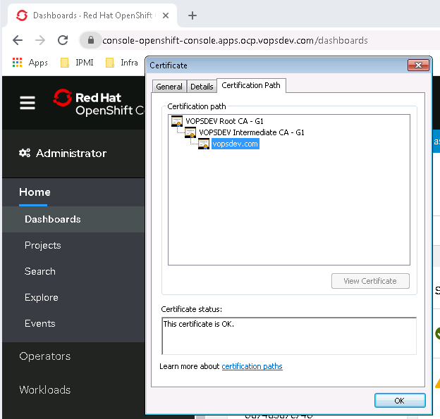

本文简单配置一下 ingress router, 解决默认设置的一些问题
- 固定 router pod 的放置节点: 默认没有 placement 规则, ingress router pod 可以跑在任意 worker 节点上, 给外部负载均衡器的配置带来麻烦
- 替换默认证书为私有 CA 签发证书, 避免内网访问时提示证书不受信任的警告
Ingress Router Placement
我这个环境里只有三个 worker 节点, 配置外部负载均衡器访问 ingress 暴露的应用时也就是用这三个节点作为后端 server pool. 但是实际情况中可能有很多 worker 节点, 因此需要对 ingress router pod 的放置策略加以限制, 便于配置外部负载均衡器.
1
2
3
4
5
6
7
8
9
10
11
12
13
|
oc explain ingresscontroller.spec.nodePlacement --api-version=operator.openshift.io/v1
oc label node ocp-node-3.int.vopsdev.com node-role.kubernetes.io/worker=infra --overwrite
oc label node ocp-node-4.int.vopsdev.com node-role.kubernetes.io/worker=infra --overwrite
oc label node ocp-node-5.int.vopsdev.com node-role.kubernetes.io/worker=infra --overwrite
oc patch ingresscontroller default --type=merge -p '{"spec":{"nodePlacement":{"nodeSelector":{"matchLabels":{"node-role.kubernetes.io/worker":"infra"}}}}}' -n openshift-ingress-operator
oc get pod -n openshift-ingress -o wide
|
替换 ingress 默认证书
使用私有 PKI 的二级 CA (issuing CA) 签发一个 wildcard 证书作为 ingress 默认证书, 包含下面名字
- ocp.vopsdev.com
- *.ocp.vopsdev.com
- *.apps.ocp.vopsdev.com
1
2
3
4
5
6
7
8
|
oc create configmap vopsdev-root-ca --from-file=ca-bundle.crt=/etc/pki/ca-trust/source/anchors/vopsdev-root-ca-g1.crt -n openshift-config
oc patch proxy/cluster --type=merge --patch='{"spec":{"trustedCA":{"name":"vopsdev-root-ca"}}}'
oc create secret tls wildcard-ocp-tls --cert=private.wildcard.vopsdev.com.chained.crt --key=private.wildcard.vopsdev.com.key -n openshift-ingress
oc patch ingresscontroller default --type=merge -p '{"spec":{"defaultCertificate":{"name":"wildcard-ocp-tls"}}}' -n openshift-ingress-operator
|
等待 router pod 重建完成后, 测试登录 web console, 可以发现证书替换已经生效 
对于内网环境, 这种 wildcard 形式的默认证书基本够用. 签发一个时效足够长的证书后也不用操心续期的问题. 但是如果想把应用发布到公网上, 还是得需要公网 CA 签发的证书. 目前用的比较多的是 Let's Encrypt, 此时可以结合 Openshift ACME Controller 实现为 ingress 资源自动申请 Let's Encrypt 证书并自动续期.